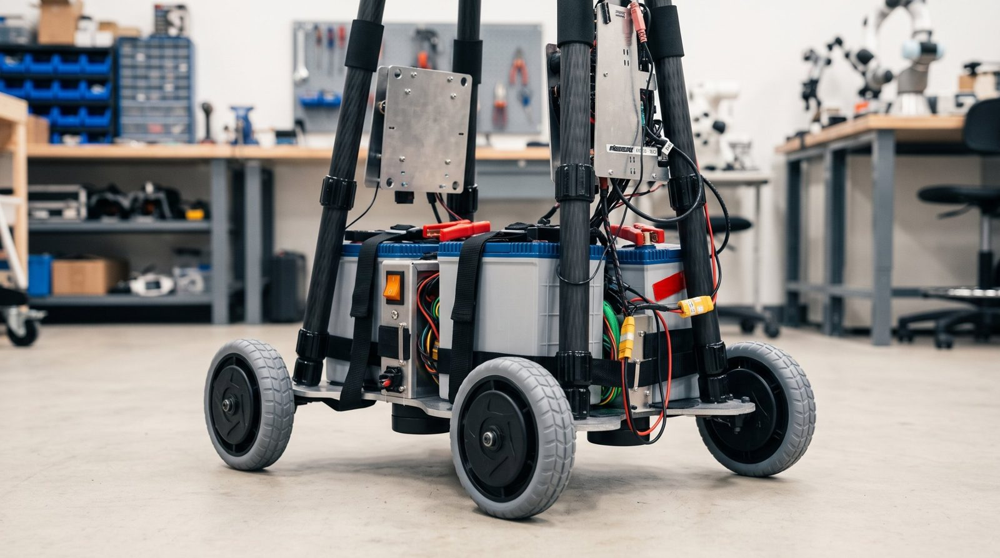
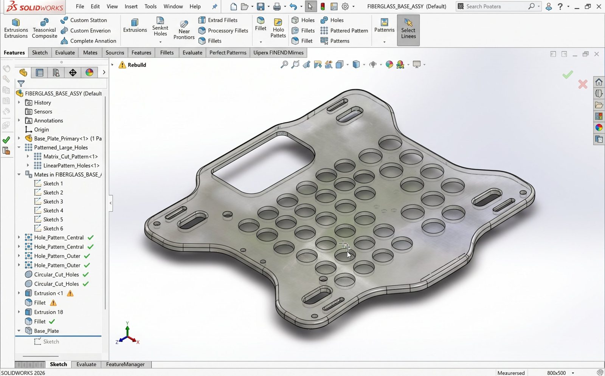
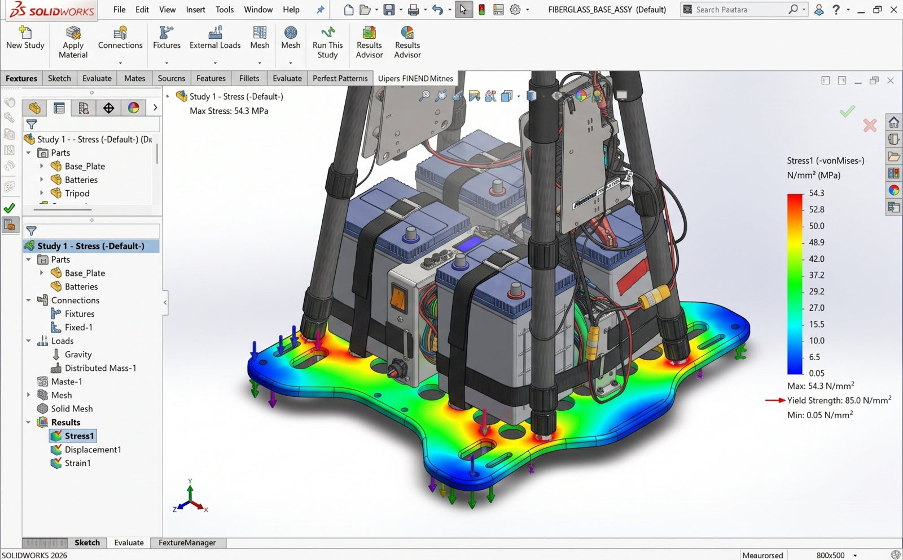
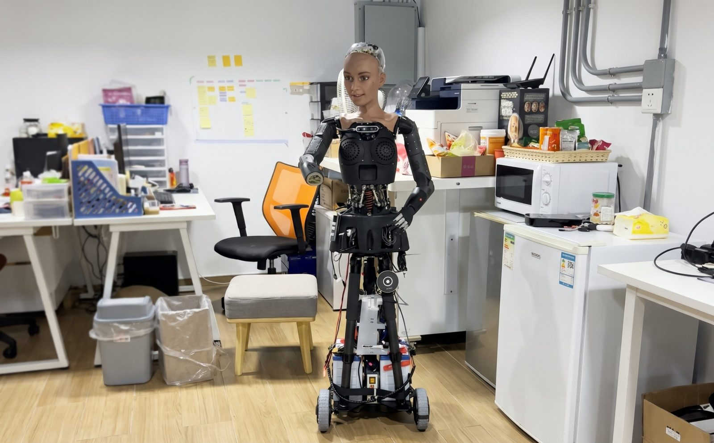
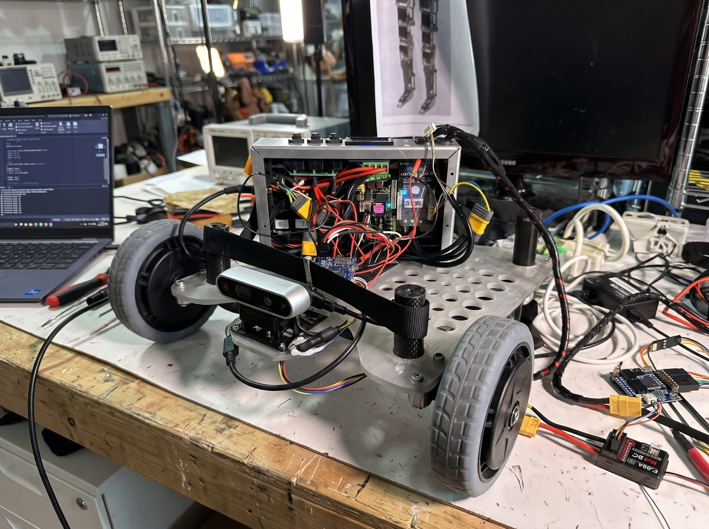

Project 1 of 4
Sophia Robot Autonomous Mobile Base
An autonomous mobile base for the Sophia robot, built as a team of two.

The problem
The mobile base did not drive in a straight line, and it could only be moved with a remote control. To carry the Sophia robot, it needed to hold a heading and move on its own.
My process

1. Design
Fibreglass base plate modelled in SolidWorks with patterned holes and mounting slots.

2. Analyse
Static stress study on the base plate: peak stress 54.3 MPa against an 85 MPa yield strength.

3. Test
The Sophia robot mounted on the mobile base for testing.
Electronics & wiring

The base on the bench with the controller, wiring, camera and wheels connected for testing.
Tools and software
What failed
- I looked for the fault in the ESC code, but no RPM setting I changed fixed the drift.
- I then chased lag in the skateboard wheels, which I believed was the cause. It wasn't.
- I also tried running the base from a flight controller with GPS, which did not solve it either.
What worked
I stopped patching and redesigned the whole base. The bottom board became strengthened fibreglass. An SBC now sits between the remote and the motor controllers as the brain, instead of driving the ESCs directly. A RealSense camera (with its built-in IMU) provides depth vision, and a LiDAR sensor maps the room. Fusing these sensors turned the base into an autonomous platform.